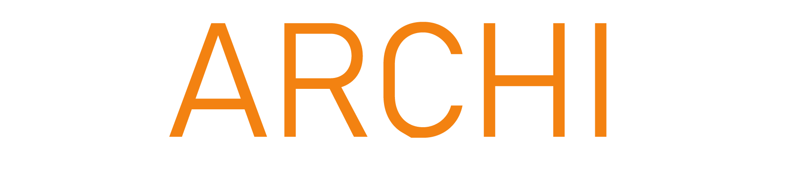
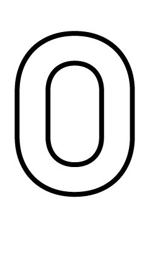
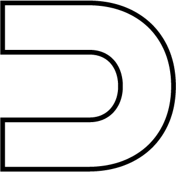
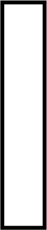
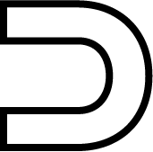
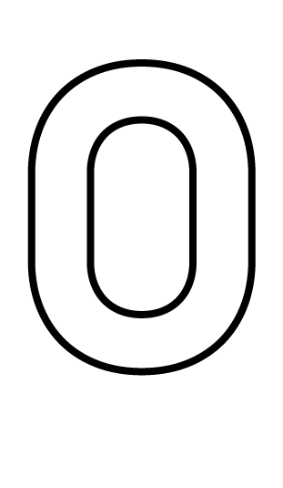
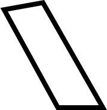
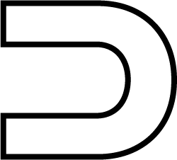
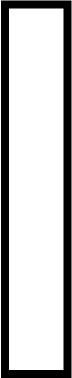
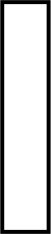
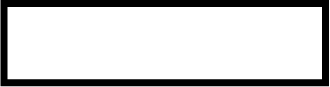
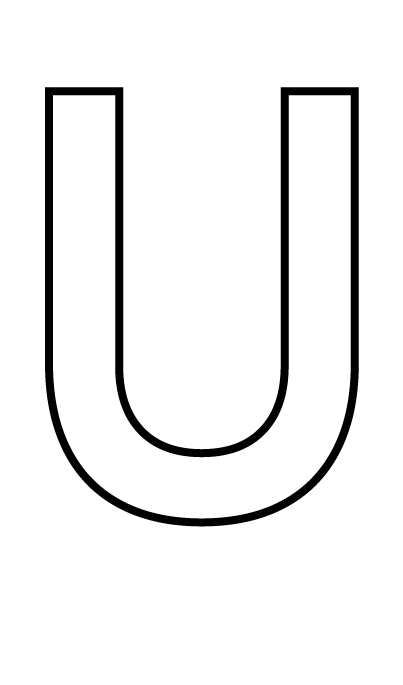
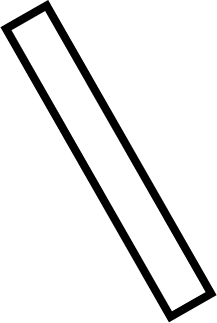
Ce jeu a été réalisé dans le cadre du projet "Cycle de la matière" porté par Dimitri Toubanos et David Serrero, accompagné de Emmanuel Doutriaux, Yann Blanchi et Edith Akiki dans le cadre du domaine d'étude Écologie de l'ENSA Paris Val-de-Seine.
" L’objectif pédagogique de ce projet est la mise au point de nouvelles méthodes constructives et de modes collaboratifs, visant une expérimentation pédagogique de construction de prototypes à l’échelle 1 sur le thème du réemploi, de la valorisation ou du recyclage de la matière.
Au travers d’un chantier collectif, les étudiants sont invités à proposer une approche centrée sur le matériau, sa mise en œuvre et surtout sa démontabilité. Cela doit permettre aux étudiants d’appréhender les caractéristiques particulières des matériaux, de leur performance structurelle à leurs performances thermiques et spatiales.
L’objectif est de développer une approche systémique et intégrée qui interroge à la fois le cycle de vie des matériaux, les assemblages structurels possibles à partir de matériaux de réemploi, mais aussi les qualités spatiales offertes par certains matériaux. Le choix du matériau se confronte ainsi au cycle de la matière.
Cela doit permettre également aux étudiants de se confronter à la question de l’empreinte carbone des matériaux, de l’analyse de leur cycle de vie, de la question de l’assemblage structurel, de la logistique et de la mise en œuvre, mais aussi de la démontabilité. " Dimitri Toubanos.
La finalité de cette expérience aurait dû nous mener à la construction à l'échelle un d'un prototype en juillet 2020. La crise sanitaire liée au Covid-19 nous a obligés à trouver des solutions alternatives pour mener à bien ce projet. Parmi ces alternatives, nous avons imaginé un jeu qui permet de rendre accessible la création de projets de réemploi.
À la suite de questionnements et d'une recherche sur les types de gisement que l'on pouvait retrouver dans la région parisienne, nous nous sommes particulièrement intéressées aux gisements de matériaux, que l'on nomme opportun, des sources de matériaux diverses et en petite quantité que l'on peut retrouver dans les déchetteries, les encombrants, les ressourceries, etc. Ce sont des gisements que l'on ne peut prévoir dans le temps et dont la quantité et la typologie varient. Ce sont des gisements ponctuels et imprévisibles.
Pour partager et rendre accessible cette démarche liée à la ponctualité et l'imprévisible, on a imaginé et conçu ce jeu illustrant notre méthodologie. Pour cela, nous vous invitons à suivre la méthodologie, créer votre propre composition de jeu et laisser place à votre imagination.